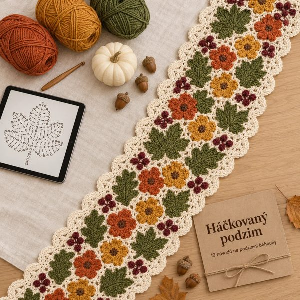

Hlavní produkt
Háčkovaný podzim · 10 podzimních běhounů
10 kompletních návodů: schémata, slovní popis kolo po kole, montážní plánky. 102 stran.
Otevřít →Tvoje bonusy
Bonus 1
První kroky: základní oka a čtení schémat
Jak číst schéma a uháčkovat základní oka, abys první běhoun zvládla bez tápání.
Otevřít →Bonus 2Příze, háčky a podzimní barvy
Jakou přízi a háček zvolit a jak skládat podzimní barvy, aby běhoun působil harmonicky.
Otevřít →Bonus 3Extra květy, listy a plody
12 samostatných motivů na podtácky, ubrousky, prostírání a aplikace.
Otevřít →Bonus 4Spojování a konečná úprava
Spojení dílů bez viditelných švů, vypnutí do tvaru, praní a ukládání.
Otevřít →Kde začít
- Otevři kolekci a vyber si vzor podle svého stolu. Pro první běhoun doporučujeme Vzor 4 nebo Vzor 7 (★).
- Pokud začínáš, projdi nejdřív bonus 1 První kroky.
- Než koupíš přízi, mrkni do bonusu 2.
- Tato stránka se aktualizuje: nové návody kolekce najdeš tady. Ulož si odkaz do záložek.
Jen pro osobní použití. Další prodej ani šíření souborů není povoleno.